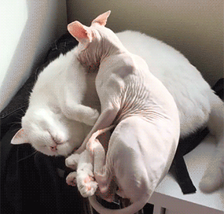

Quando usar
Você deve estar se perguntando para que servem as roupinhas, afinal. O uso de roupas é liberado no caso de animais sem ou com pouca presença de pelos que residem em regiões mais extremas, como no sul do país, por exemplo.
Atenção
Cães idosos, filhotes e os de pequeno porte como o Pinscher, o Chihuahua e o Daschund costumam ser mais friolentos. Em gatos o uso de roupinhas é proibido, salvo nos casos do Sphynx e do Cornish Rex. Nessas condições o uso de roupinha é permitido, desde que seja trocada com frequência, devidamente higienizada, e retirada ao aumento da temperatura.
